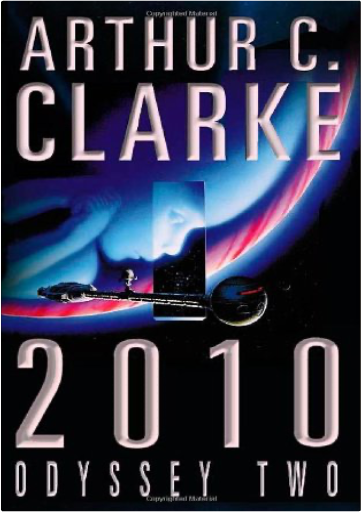

The Stone KeyISOBELLE CARMODY  Top of cover has "The Obernewtyn Chronicles - Book Five" instead of "Book Six. 1000 pages. Super SoyaTanya Carr Full of nutrients and low in fat soya is hailed as the new wonder food. It will reduce your chances of getting heart disease, diabetes and cancer. It even helps lessen the symptoms of the menopause; Our cookery experts show how delicious and versatile soya can be; with mouthwatering recipes for breakfast, lunch, dinner and snacks; Soya products are now readily available in high street stores, so it couldn't be easier to change to a healthier way of eating Did you know? Japanese women - who eat greater quantities of soya than Western women - have half the rate of breast cancer |  Orphaned by an automobile accident in Australia, fifteen-year-old Megan returns to her family's native Wales where, with the help of a new friend, she discovers her true destiny and the meaning of her terrifying dreams.  Arthur C. Clarke has been the presiding genius of science fiction for almost fifty years. His works include the ground-breaking and profound CHILDHOOD'S END, RENDEZVOUS WITH RAMA and EXPEDITION TO EARTH. Written when landing on the moon was still a dream, made into one of the most influential films of our century, brilliant, compulsive, prophetic, 2001: A SPACE ODYSSEY tackles the enduring theme of man's place in the universe. On the moon an enigma is uncovered. So great are the implications that, for the first time, men are sent out deep into the solar system. But, before they can reach their destination, things begin to go wrong, horribly wrong...Look out for more information on this book and others on the Orbit website at www.orbitbooks.co.uk  2010Arthur C Clarke To the spaceship Discovery, floating in the silent depths of space since Dave Bowman passed through the alien 'Star Gate', comes Heywood Floyd on a mission of recovery. What he finds near Jupiter is beyond the imaginings of any mere human. |

Doddridge Library
Collection Total:
417 Items
417 Items
Last Updated:
Apr 21, 2020
Apr 21, 2020


 Made with Delicious Library
Made with Delicious Library